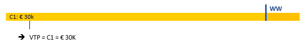
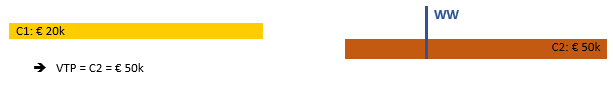
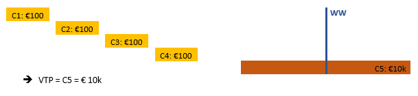
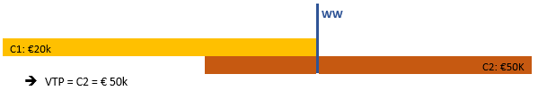
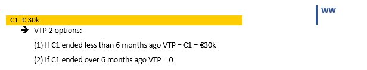
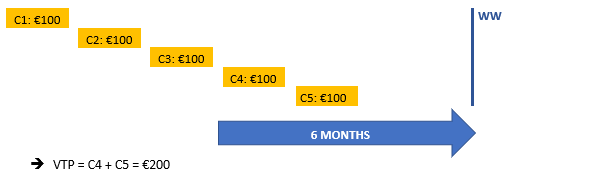
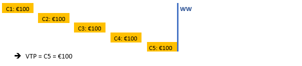
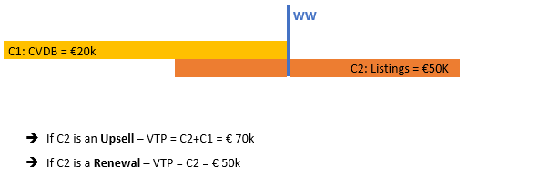

Working Withs & Protection
Working With
WW definition
The Working With (WW) is an essential step of The Network’s sales process. It allows the selling partner to check whether other partners are already working with a certain customer on a local level and if so, the details of the contract or the proposal sent.
It should be sent through Salesforce right after the selling partner knows about the customer’s hiring needs, or even before the customer visit if the selling partner is already aware of the countries where the customer operates. It will help to map out their international needs and secure the selling partner’s efforts towards this customer. In any case the WW should be sent before any quotation.
The WW request should mention the names of all the subsidiaries involved in the international deal.
The selling partner should also write in the WW request when the deal will not lead to a centralization, but has a separate budget, independent from the local contracts that the receiving partners have. In such case, the receiving partners can keep parallel local contracts with the customer and should not receive protection.
We understand centralization as the client’s wish to consolidate all their hiring needs from a single point of contact. When centralization happens, the local contracts are replaced by international contracts managed by the selling partner. In these cases the selling partner needs to guarantee protection.
WW validity:
The validity of a WW is 1 month in case of "Investigative" status. In case of "Working on Proposal" status, the validity is 3 months, which is the expected time for a selling partner to close an international deal. In case the negotiations take longer, the selling partner must re-issue the WW to secure their negotiation effort for another 1-3 months.
Within the WW validity, the partners who have received a WW (receiving partners) cannot approach the customer locally. However, when centralization = NO, customer can be approached locally.
If the selling partner does not close the deal within the WW validity and does not send a new WW, the receiving partner may proceed locally.
In any case, The Network strongly advises the receiving partner to contact The Network and the selling partner before taking local action to ensure a smooth collaboration.
WW SLA
According to The Network SLA, a WW must be replied within 2 working days. If after these 2 working days a WW was not replied, the WW status will automatically change into “done”, meaning that there is no local activity. Therefore, the receiving partner won’t be able to claim protection afterwards.
Please be aware that Salesforce understands a working week from Mondays to Fridays.
WW & Renewals
When renewing a contract, new WWs are only needed to be sent to new countries (not included in the previous contract). For those countries that were already included in the main contract, the WWs will be automatically duplicated (cloned). In this case, the receiving partners do not need to answer them again and the Value to Protect is the same as in the previous contract.
Renewal can be done for an extra period of 2 months during which WWs will be duplicated, after the contract expiry date. If the contract has not been renewed 2 months after its end date, a new contract must be created and new WWs must be sent to all the receiving partners concerned.
When to apply protection
When the partner receives a WW for a customer already in their portfolio, they are entitled to ask for protection in the following cases:
- A local contract already exists for this client and the international deal would impact the receiving partner’s local revenue
- A local written proposal was sent within the last 3 months, prior to receiving the WW
The full local contract/proposal amount will be stated on the WW as the Value to Protect, despite the type of products.=> Unless when no centralization, then value 0.01€ and details in WW product.
In case additional information indicates that we are speaking about a one-off deal that doesn’t impact any local contract value, please inform The Network who will evaluate the case together with the receiving partner.
When protection is granted, the receiving partner shall retain 90% instead of 45%. This also applies to future renewals. The Network will always receive 10%.
When the Value to Protect is reached, the amount that is exceeding this protected value will be split according to the normal revenue split (45%/10%/45%).
Scenario 1
When there is a running local contract (C1) in place, the Value to Protect (VTP) is the total local contract value.
Scenario 2
When there is a running local contract and a local proposal (P) for renewal has been sent, the VTP is the value of the proposal if:
- It can be verified that it is a real proposal (a valid written proposal sent within the last 3 months with a specified validity, defined by start and end dates).
- It is accepted by the customer (if customer accepted, then the deal keeps going locally)
Scenario 3
When there are two consecutive local contracts. Contract 1 (C1) already ended during the year and Contract 2 (C2) is ongoing when the WW is sent; the Value To Protect is Contract 2.
Scenario 4
When there are several small local contracts (C1, C2, C3, C4) which already ended followed by a gap and a new running local contract with a longer duration and for a higher amount (C5); the VPT is the one on the running contract.
Exceptionally the VTP could be the prorated contract value of all contracts (the VTP would be the one corresponding to the last 12 months since the date the WW was received, C5 would also be prorated). Exceptionally: ex of prorated – would be: VTP-> (50%xC5) + C1+C2+C3+C4.
Scenario 5
When there are two local contracts overlapping: contract 1 + contract 2 (running): VTP contract 2.
Scenario 6
When there is no active local contract running at the time when the WW is received, but the partner that received it had business with the customer before; this business can be included in the WW if their local contract ended less than 6 months ago. In this case, the Value to Protect (VTP) is the value of the local contract.
Scenario 7
When there are several small local contracts (C1, C2, C3, C4, C5) which already ended followed by a gap; the VPT is the addition of the contracts which ended less than 6 months ago.
Exceptionally, the VTP could be the prorated contract value corresponding to the last 12 months since the date the WW was received.
Scenario 8
When there are several small contracts (C1, C2, C3, C4, C5) and a WW is received during the validity of the last of them; the VPT is the value of the running contract, C5.
Exceptionally, the VTP could be the prorated contract value corresponding to the last 12 months since the date the WW was received, VTP – 500EUR.
Scenario 9
When there are two local contracts for different products overlapping, for example Contract 1 for CVDB & Contract 2 for listings (running): VTP depends if Contract 2 is an upsell or a renewal.
Exceptionally other measures can be discussed, depending on the case.
When the selling partner is centralizing a deal, it is important to take into consideration the WW analysis and level of cost of sale (VTP). In order to maintain a good level of profitability and to avoid the destruction of local value, there are 2 aspects to verify before presenting any proposal to the customer:
- The level of cost of sales should never be higher than the contract value. The selling partner should ensure that the worth of the international contract is enough to give away all the protection requested and still be profitable (Revenue-COS). (Cost of sales -> it’s the amount that SP has to pay to RP).
- The rates at which the customer was buying locally, should be the same or lower than the international rates. This implies that if the Local Unit Rate at which the customer was buying is higher than the GFP’s unit rate, the local price must be maintained, (ex: SP has a price from PT a local deal of 5x 1300eur, but Germany comes back and says that they have local deal of a higher value, ex 1500eur with some extra services, so SP needs to check with DE what they have locally to make sure that they wont destry any local value with GFP lower prices.)
Use Salesforce to monitor and report the level of protection. Keeping track of the protection paid and received is partners’ responsibility.